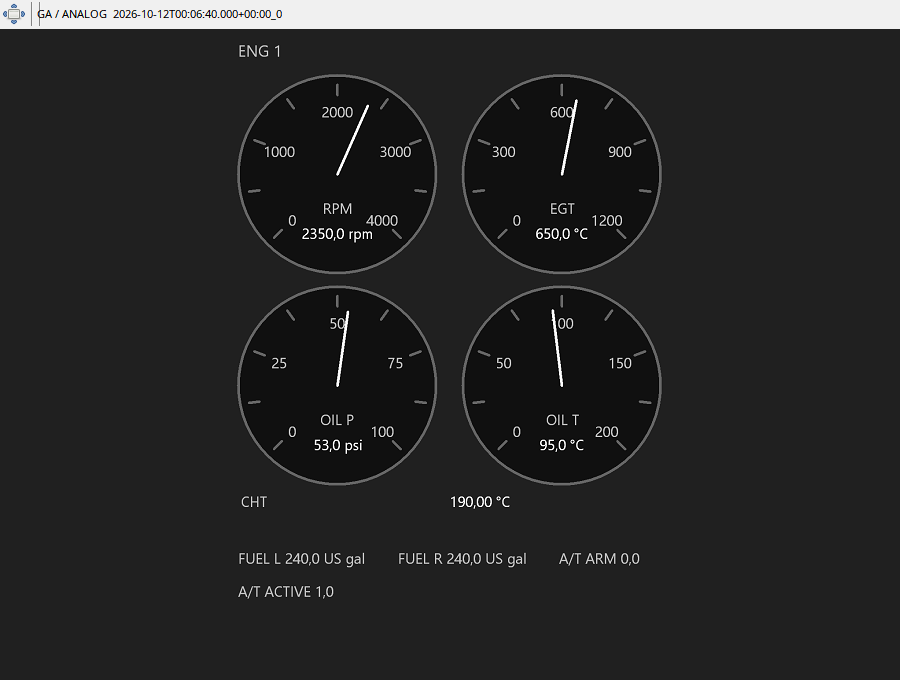

Start with RPM and compare load with EGT/CHT, oil pressure and oil temperature. Low RPM on a cold engine differs from a drop in flight; inspect several moments before and after a change. The set is repeated for the recorded engine count. Oil pressure is displayed in psi rather than psf.
Left/right fuel quantity is the tank inventory, not instantaneous fuel flow. Electrical, vacuum/suction and condition/beta/reverse indications depend on available data and aircraft equipment. Missing EGT/CHT or an empty historical gauge is not a measured zero.
